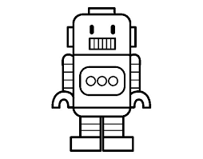
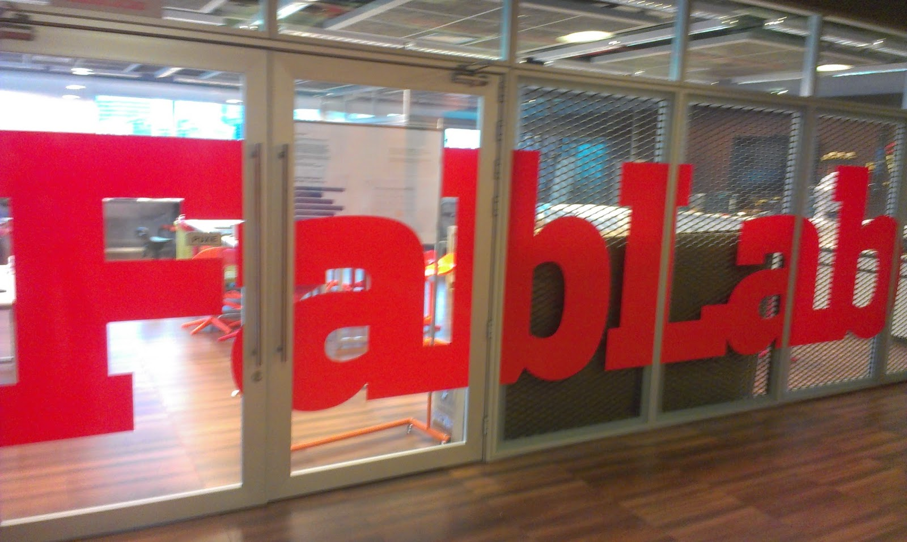

Portifolio Engenharia
Engenharia Mecatrônica

- Estação Meteorológica (Instrumentação e Medição)
Engenharia Mecânica
- Circuito eletrônico com amplificador operacional
ou diodos transistores (Acionamentos Elétricos)
- Acionamento PWM com eletrônica analógica ou
filtro (Acionamentos Elétricos)
- Sistema mecânico (Modelagem e Simulação)
Engenharia da Computação
- Calculo de conceito (Design de Software)
- CRUD (Design de Software)
- Jogo da Velha (Design de Software)
- Projeto Final (Design de Software)
- Protótipo de Website (Co-design de Apps)
- Protótipo de Aplicativo (Co-design de Apps)
- Análise exploratória (Co-design de Apps)
- Computação de interfaces (Co-design de Apps)
Projetos Teóricos
- Projeto único (Física do movimento)
- Dinâmica populacional (Modelagem e Simulação)
- Farmacocinético ou termodinâmica (Modsim)
- Modelos de regressão (Ciência dos dados)
- Ajuste do modelo teórico (Ciência dos dados)
- Teorema do limite central (Ciência dos dados)
Projetos Práticos

- Application do singularity
- Artigo 1 (Grandes Desafíos Engenharia)
- Artigo 2 (Grandes Desafíos Engenharia)
- Brinquedo infantil (Natureza do Design)
- Rede de distribuição de petroleo (Instrumentação e Medição)